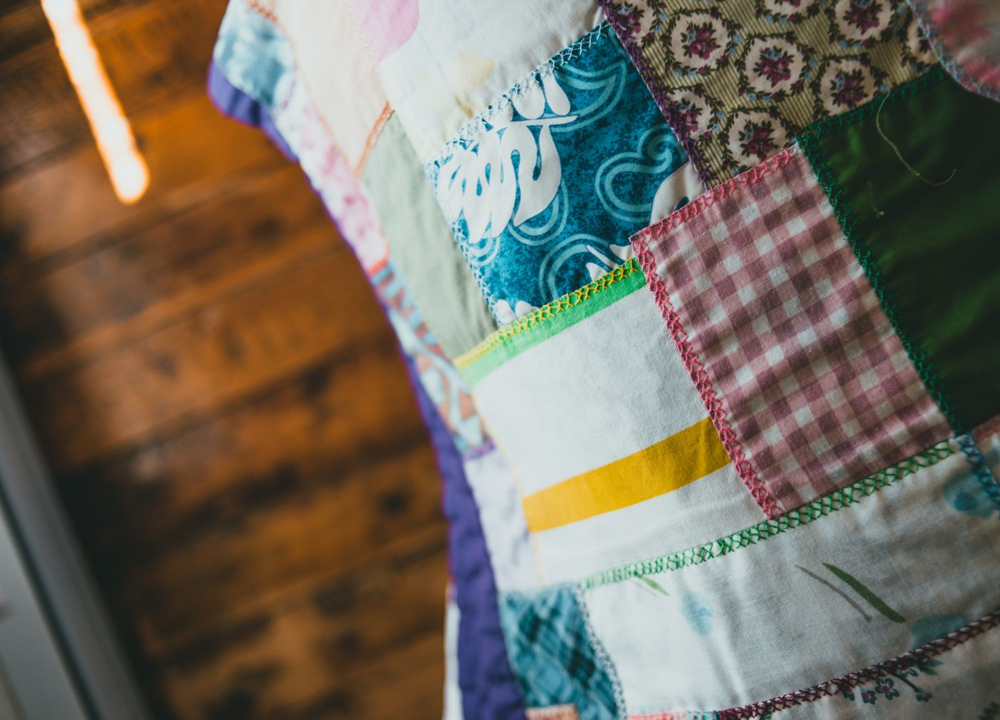
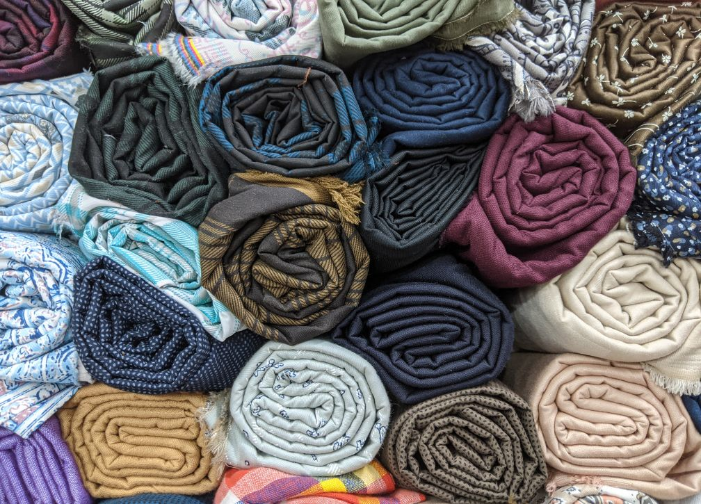
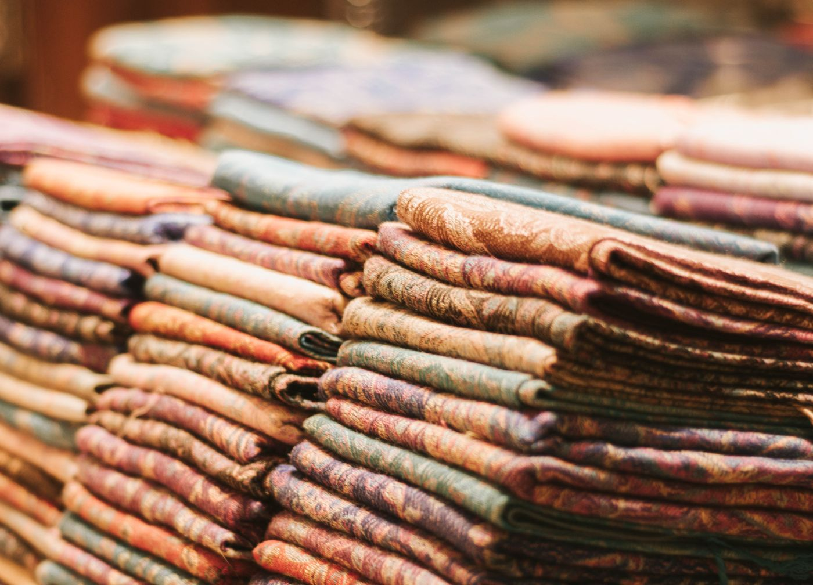
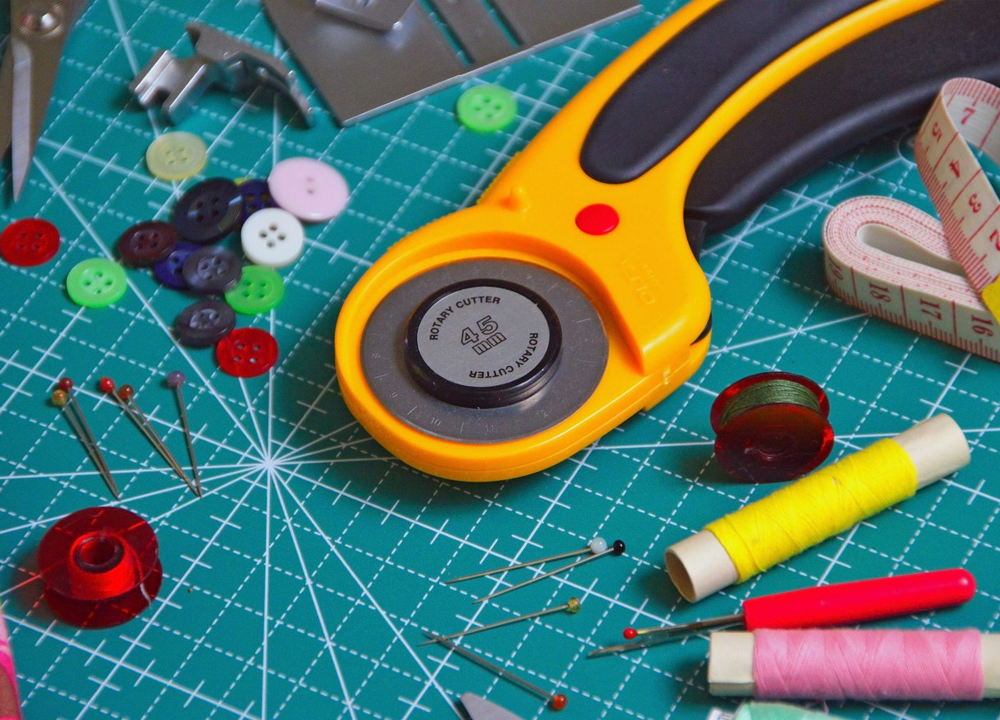

Quilting & Fabric
Nine-Patch Quilt Kit, 60 × 72 Inches
Beginner$72.00
Shipping is a flat $5.95. Free standard shipping on US orders over $45. Sales tax is calculated at checkout where applicable.
Every piece of fabric for a 60 by 72 inch nine-patch quilt top, plus a 24-page instruction book.
Returnable within 30 days of delivery only if the yarn or fabric is unused, uncut and still in its original band or fold. See Returns & Refunds.
About this one
The photograph shows a finished nine-patch quilt, which is what this kit makes. The kit itself is the fabric and the instructions, not a completed quilt — we say that plainly here because it is the one thing about a quilt kit that is easy to get wrong.
A nine-patch is the first block almost everybody learns: nine squares sewn into a three by three grid, then those blocks joined with sashing between them. There is no curved seam, no set-in corner and no bias edge anywhere in it. What it does teach you is an accurate quarter-inch seam, which is the skill everything else in quilting rests on.
In the box are twenty pre-cut coordinated fabrics for the blocks and the sashing, a separate cut for the binding, and a 24-page spiral-bound book that takes you from pressing the fabric to sewing the binding down, with a photograph at every step rather than a diagram.
The finished top is 60 by 72 inches, a generous single or a good lap quilt. **Batting and backing fabric are not included** — they are bulky, they are cheaper bought locally, and including them would add about twenty dollars to the price for something you may want to choose yourself. The book tells you exactly what size and type to buy.
Specification
Category
Quilting & Fabric
Skill level
Beginner
Materials
100% quilting cotton throughout, approximately 145 gsm. Twenty coordinated pre-cut fabrics. Spiral-bound instruction book, 24 pages.
Size and weight
Finished top 60 × 72 in. Blocks 9 in finished, 8 × 10 block layout with 2 in sashing. Kit weight 2.7 lb.
Skill level
Beginner. No curved seams, no set-in corners, no bias edges.
Not included
Batting and backing fabric. The book specifies the sizes to buy.
Photograph note
The photograph shows the finished quilt. The kit contains the fabric and the instructions.
In the box
- Pre-cut fabric for eighty nine-patch blocks
- Sashing and border fabric
- Binding fabric, cut and ready to join
- 24-page spiral-bound instruction book with step photographs
- Printed cutting and layout diagram
Care
- Press every seam as you go. It is the difference between a flat quilt and a wavy one.
- Keep to a scant quarter-inch seam allowance throughout; the book explains how to test yours.
- Wash the finished quilt cool with a colour catcher for the first three or four washes.
- Dry flat or on a very low tumble setting.
Shipping
Ships within 2 to 3 business days from Lancaster, PA.
Returns
Returnable within 30 days of delivery only if the yarn or fabric is unused, uncut and still in its original band or fold. See Returns & Refunds.
More from this shelf
-

Quilting & Fabric
Fat Quarter Bundle, Twelve Prints
- red
- gold
- leaf
- denim
- mauve
- tan
Twelve coordinated quilting cotton fat quarters, each 18 by 22 inches, pre-cut.
$44.00Free shipping over $45
-

Quilting & Fabric
Cotton Solids Stack, Ten Half-Yards
- shell
- wheat
- pale sage
- mist
- steel
- ink
Ten half-yard cuts of solid quilting cotton in a graded run from pale to deep.
$52.00Free shipping over $45
-

Quilting & Fabric
Rotary Cutter & Self-Healing Mat Set
BeginnerA 45mm rotary cutter, a 24 by 18 inch self-healing mat and a 6 by 24 inch acrylic ruler.
$54.00Free shipping over $45